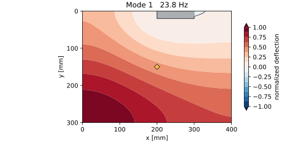
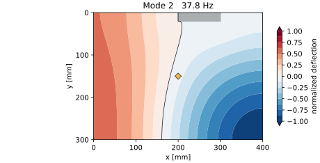
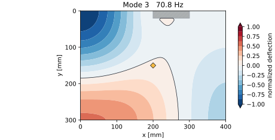
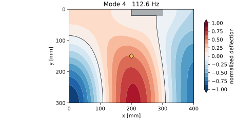
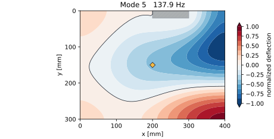
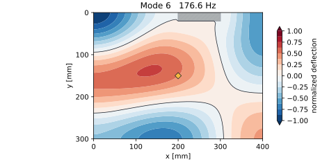
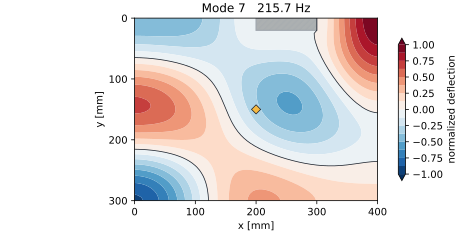
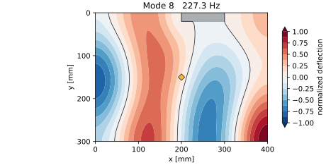

300 × 400 mm板を横置き（解析座標 x=400、y=300 mm）し、板厚5 mmのPMMAをKirchhoff–Love薄板として離散化しました。12エリア中心を単位力積で励起し、中央センサ (200, 150) mm の応答を比較します。
| 仕様 | 現行ページ | 追加ページ |
|---|---|---|
| 外形・板厚 | 400 × 200 × 3 mm | 400 × 300 × 5 mm |
| エリア | 4 × 2・8打点 | 4 × 3・12打点 |
| センサ | (200, 100) mm | (200, 150) mm |
| 固定 | x=200–300、y=0–20 mm | |








6.4 kHz・2,048点、12打点共通スケールで、波形形状・卓越周波数・相対ピークを切り替えて比較できます。
| モデル | Kirchhoff–Love薄板の有限差分 | 面外変位1自由度/節点 |
|---|---|---|
| 格子 | 81 × 61 = 4,941節点 | x/yとも5 mm間隔 |
| 材料 | E=3.2 GPa、ν=0.35、ρ=1,180 kg/m³ | 等方PMMA |
| 固定 | x=200–300、y=0–20 mm | 板上辺中央100 × 20 mm |
| 固有値 | SciPy eigsh | 先頭18モード |